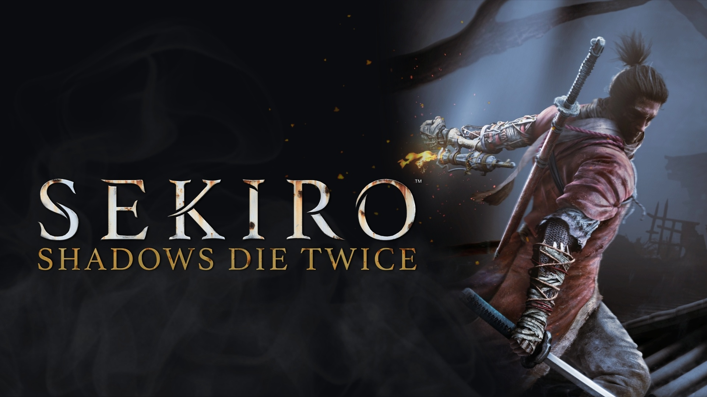
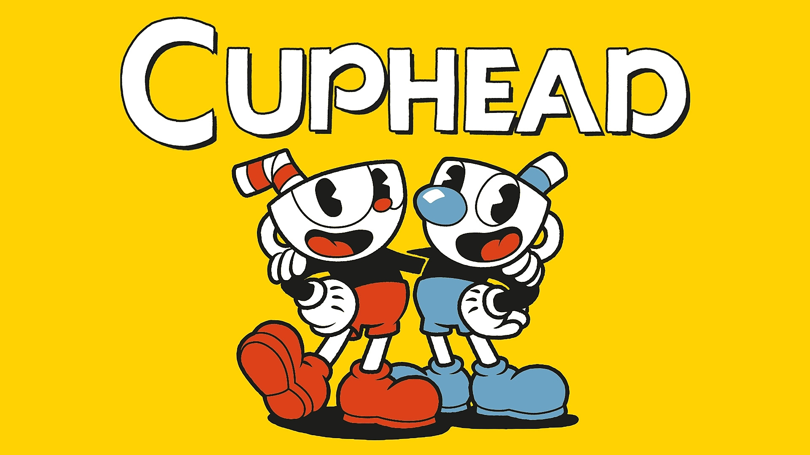
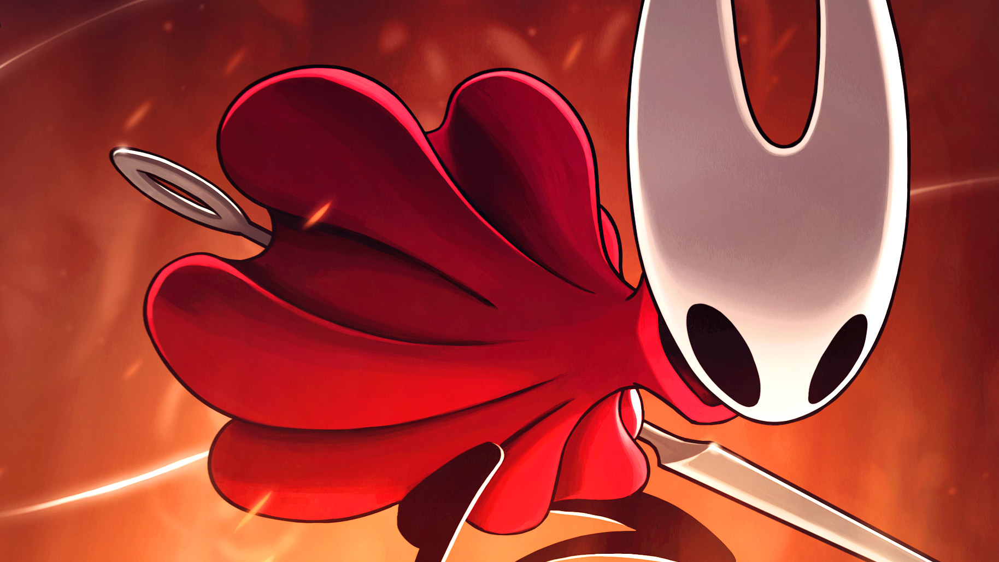

Gaming | Los 5 juegos más difíciles
Publicado por CodeMasters — 2025

🥇 Top 1 — Elden Ring
Elden Ring sigue siendo uno de los juegos más desafiantes incluso en
2025. Sus jefes implacables, la falta de guías claras y la necesidad
de aprender de cada derrota lo convierten en una prueba de paciencia,
habilidad y estrategia.

🥈 Top 2 — Sekiro: Shadows Die Twice
Sekiro castiga cualquier error. Su sistema de combate basado en
reflejos, parrys perfectos y precisión extrema lo hace uno de los
juegos más exigentes jamás creados. No hay niveles fáciles ni ayudas
reales.

🥉 Top 3 — Dark Souls III
Dark Souls III mantiene su reputación como un reto serio para
cualquier jugador. Enemigos impredecibles, castigo constante y jefes
memorables hacen que avanzar se sienta como una verdadera victoria.

🎯 Top 4 — Cuphead
Aunque su estilo caricaturesco engaña, Cuphead es brutalmente difícil.
Requiere reflejos rápidos, memorización de patrones y una precisión
casi perfecta, especialmente en los niveles finales.

🔥 Top 5 — Hollow Knight
Hollow Knight combina dificultad, exploración y combates exigentes.
Sus desafíos opcionales, jefes avanzados y el famoso contenido del
“Panteón” ponen a prueba incluso a jugadores experimentados.